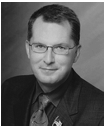

Vượt qua một tuổi thơ u tối và nghiệt ngã, Dave trở thành một sĩ quan Không quân Hoa Kỳ. Trước khi về hưu, ông từng đóng vai trò quan trọng trong một số hoạt động mang tên Just Cause, Desert Shield và Desert Storm. Trong thời gian phục vụ trong không quân, Dave còn hoạt động trong Hội Trẻ vị thành niên và những chương trình khác về “Tuổi trẻ với những nguy cơ” trên toàn bang California.

Những thành tựu đáng kể của Dave đã được thừa nhận bằng nhiều giải thưởng cũng như những nhận xét cá nhân của các cựu Tổng thống Ronald Reagan, George Bush và Bill Clinton. Năm 1990, ông là người được nhận giải thưởng J.C. Penney Golden Rule. Tháng 1 năm 1993, Dave vinh dự được bầu chọn là một trong mười thanh niên xuất sắc của Hoa Kỳ. Tháng 11 năm 1994, Dave là công dân Mỹ duy nhất được trao tặng giải thưởng Thanh niên tiêu biểu nhất của Thế giới ở Kobe, Nhật, vì những cống hiến của anh trong lĩnh vực thông tin và ngăn ngừa nạn bạo hành trẻ em cũng như cổ vũ tinh thần và truyền cảm hứng để người khác có được ý chí kiên cường. Dave còn vinh dự được rước đuốc trong Thế vận hội năm 1996.
Dave hiện sống một cuộc sống hạnh phúc ở Rancho Mirage, California, với vợ, con trai Stephen và chú rùa cưng tên Chuck. Những hoạt động vì thanh thiếu niên của Dave Pelzer có thể được tìm hiểu thêm tại website: www.davepelzer.com